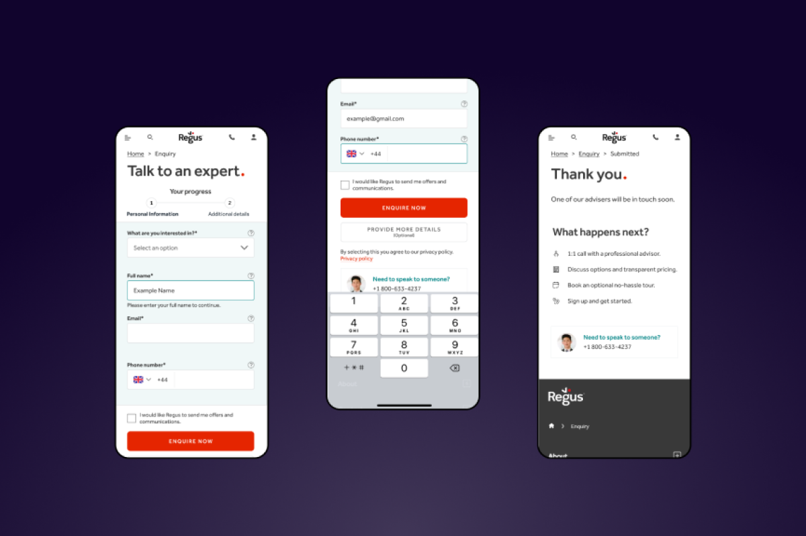
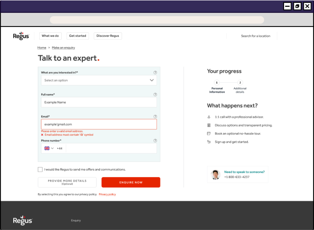
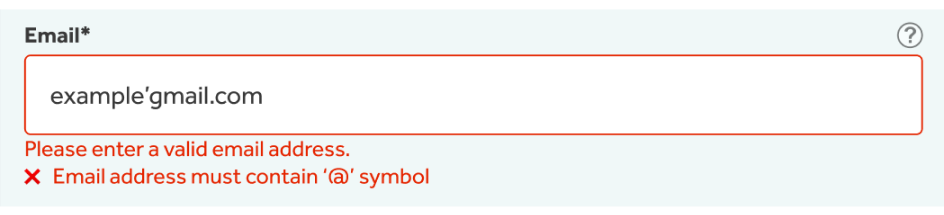
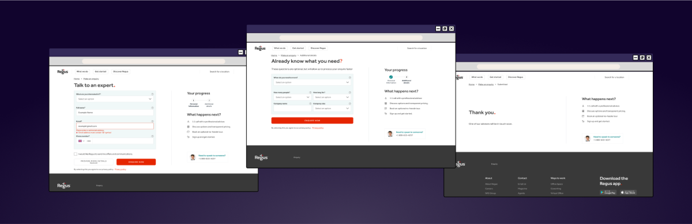

Optimising forms for a start up
A flexible office-booking startup was looking to improve the conversion on their quote form on their website.
Here are the design solutions I came up with to solve issues identified in the UX audit and to build on their usability. This issue was briefed to me by a digital agency who I regularly freelance for. I was sent the CRO and UX audit of the whole site to review. As this work is sent in tasks, the audit had been completed by someone else, however I have worked on these before so I had a good idea what to expect! I was briefed to work within the brand style, but I had to recreate this from scratch in figma, proposing a design that was consistent in style, but more user friendly.
Design Process:
Review of the current form and audit reports to understand the issues. Research of best practices for form design and user experience Sketching and prototyping the proposed solution.
Getting the structure right
A key issue identified in the audit was the overall structure of the form. When the form was expanded, it pushed key fields below the fold, hiding key information and making the path to submission less clear. I updated the design to ensure all form fields were visible without scrolling. I also proposed that we take the design further, splitting the form over two pages so that the compulsory fields were all on the first page, with a secondary page of optional fields. While it can seem counterintuitive at first, multi-step forms actually achieve a better completion rate than forms all on one page.

Plain sailing navigation
Even with a two-step form, its important users have clear feedback to where they are in the process and ability to navigate through it. To help them, I added breadcrumbs and a progress bar indicating what step they were on and what they had completed.
In-line validation
Error messages weren’t specific to the field and did not guide the user to what error they were making. I added in-line error validation, providing immediate feedback to the user if there are errors in their answers. The existing form relies on the user submitting the form before revealing errors, so automatic validation avoids this point of frustration.

Other changes:
Added top aligned labels as these have a faster completion time and still appear once the user has entered content in the field so less memory burden Removed placeholder to avoid confusing users as they completed the form Added background colour to distinguish form Added optional tooltips to the modules Kept sidebar on thank you page to ensure users can speak to someone immediately if needed The design will be developed in Optimizely and A/B tested against the original form to ensure it improve results before implementation.
